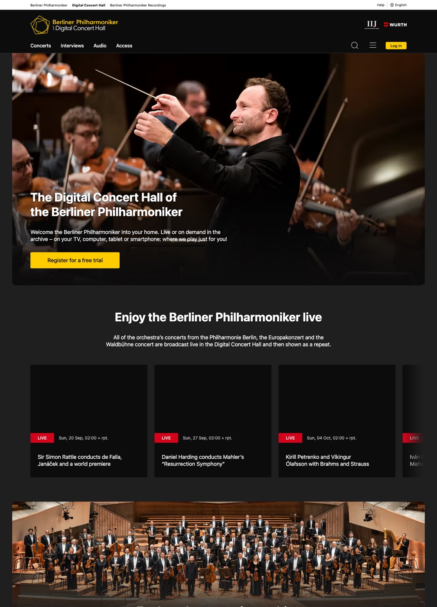
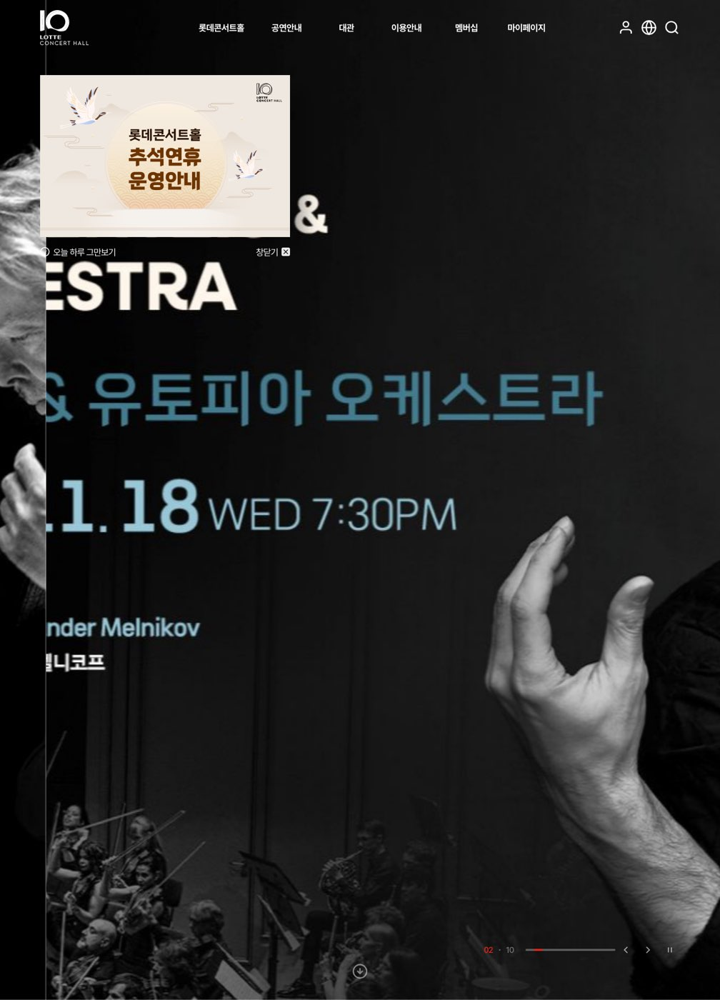
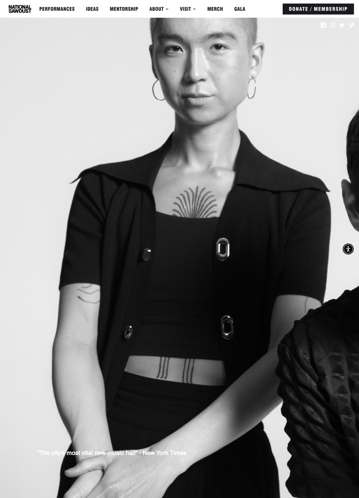
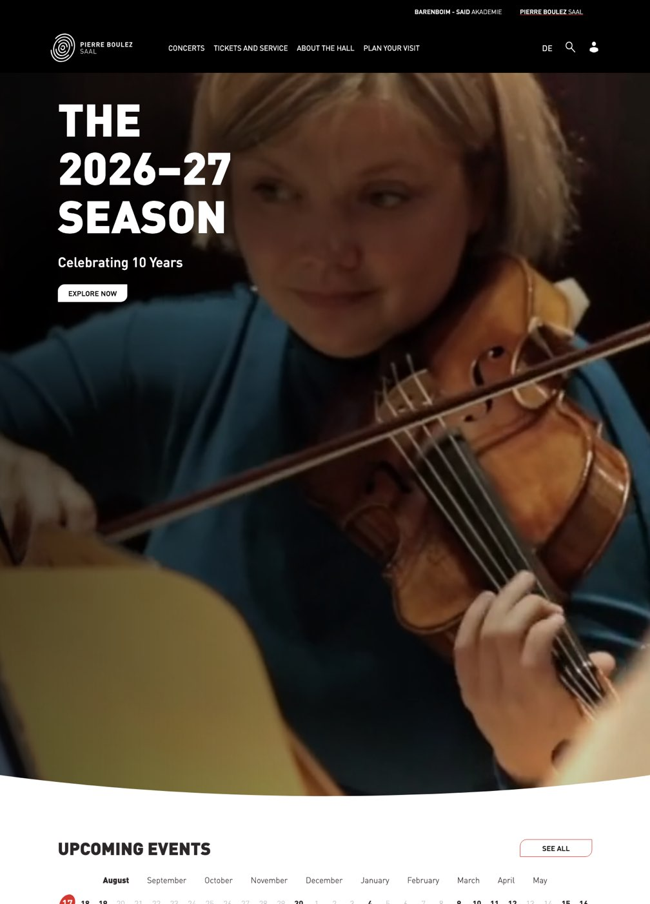
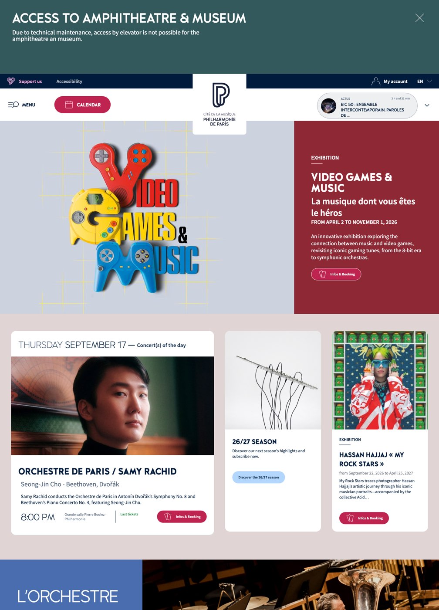
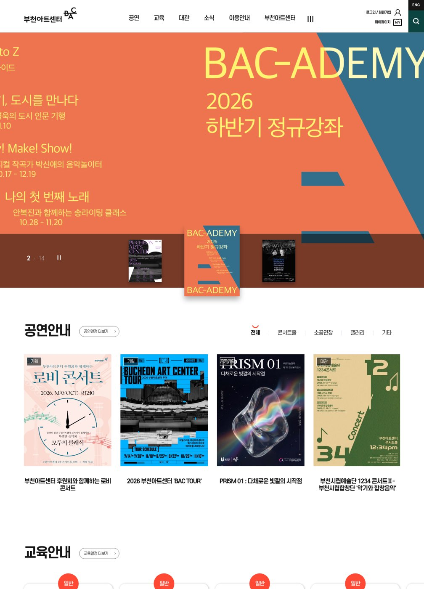
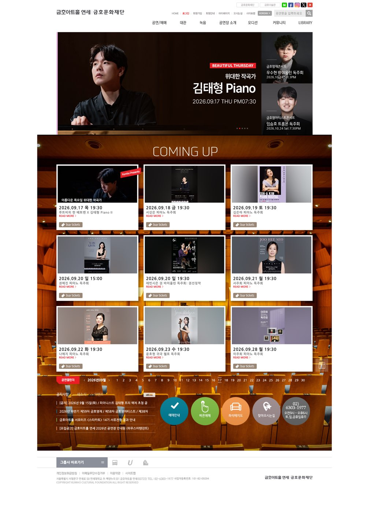
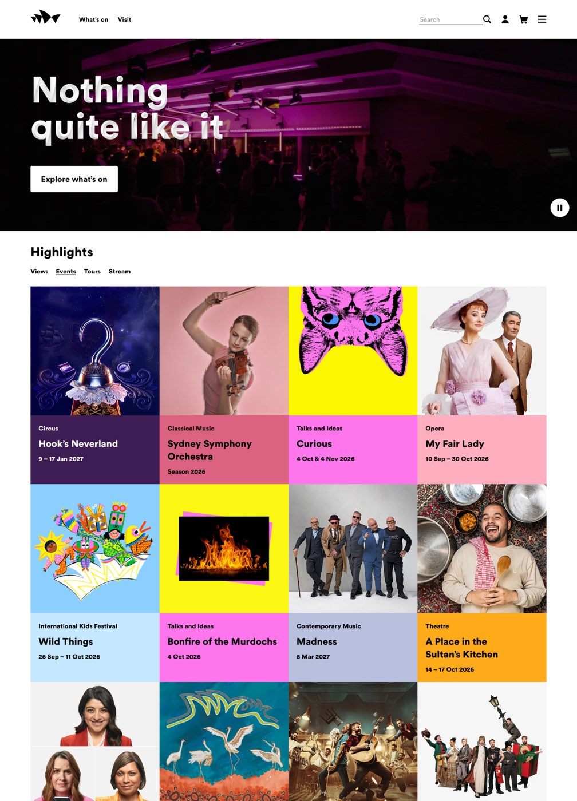
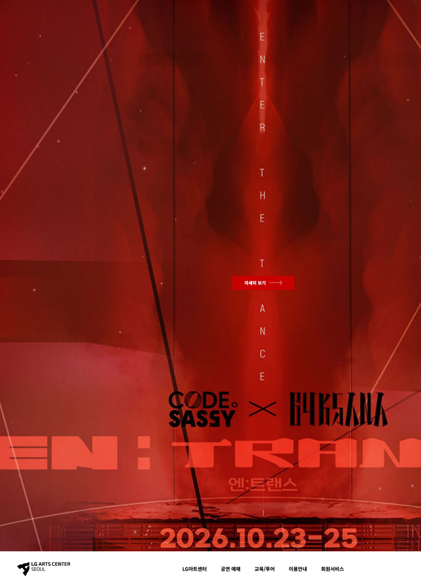

{kind=link}

Berliner Philharmoniker · Digital Concert Hall
digitalconcerthall.com
- 가져올 것
- 거의 검정 바탕 + 포인트 색 딱 하나(노랑)만 버튼에. 히어로를 화면 끝까지 채우지 않고 여백을 둔 둥근 상자로 넣어 사진 해상도 부담을 줄임. 카드에 ‘상태 라벨 + 일시 + 제목’ 순서.
- 피할 것
- 가운데 정렬 안내문이 반복되어 화면이 길어짐.
시안 A(어두운 무대 · 목재 호박색 · 명조 제목)를 다듬기 위해 2026-09-17에 직접 열어 확인한 공연장 사이트들입니다. 이미지에 마우스를 올리면 아래쪽까지 흘러 보입니다. 각 항목은 “가져올 것 / 피할 것”을 규칙으로 적었습니다.

digitalconcerthall.com

lotteconcerthall.com

nationalsawdust.org

boulezsaal.de

philharmoniedeparis.fr

bac.or.kr

kumhoarthall.com

sydneyoperahouse.com

lgart.com
| 대상 | 결과 |
|---|---|
| Elbphilharmonie (elbphilharmonie.de) | 쿠키 동의 창에 가려 첫 화면만 확인. 메뉴 구성(What's On · Visit · The Halls · Mediatheque)에서 ‘공간(The Halls)’을 1단 메뉴로 두는 점만 참고. |
| Wigmore Hall | 자동 접속 차단(403). 확인하지 못함. |
| 세종예술의전당 (sjac.or.kr) | 두 기관 중 고르는 관문 화면만 있음. 디자인 참고 가치 낮음 — 다만 같은 도시의 공공 공연장이므로 메뉴·대관 안내는 추후 비교 대상. |
| Design -isms | 목록이 스크립트로 그려져 자동 열람으로는 49개 사조 내용을 읽지 못함. 직접 열어 고르신 사조가 있으면 규칙으로 옮기겠음. |
| MotionSites | AI용 프롬프트 모음. 대부분 유료 구독, 공연·문화 분야 예시는 보이지 않음. 이번 작업에는 불필요. |
| 21st.dev | React 컴포넌트 모음(하루 2개 무료 복사). 지금 시안은 순수 HTML/CSS라 불필요. 구현 단계에서 달력·캐러셀이 필요하면 재검토. |
캡처는 내부 검토용입니다. 다른 기관의 사진·문구·코드는 가져오지 않고, 배치와 위계의 원칙만 참고합니다.
{kind=link}
{kind=link}
{kind=link}
{kind=link}
{kind=link}
{kind=link}
{kind=link}
{kind=link}